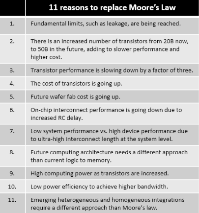
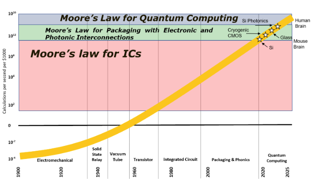
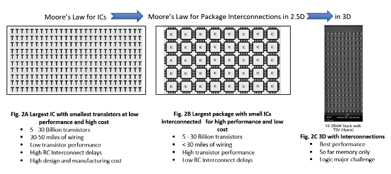
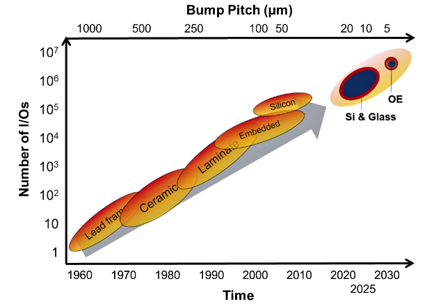

Current Issue
Subscribe NowMarch • April; Volume 24, Number 2
Cover PhotoImplementing 5G technology requires transmission of large amounts of data, reliable connections, quicker response time, and better coverage. Fully integrated RF front-end modules using a system in package (SiP) that includes antenna in package (AiP) technology, double-sided assembly, advanced wafer-level redistribution layer (RDL), passive component integration, and sophisticated RF shielding techniques provide the most advanced 5G package.
Image courtesy of Amkor
Read the issue Download PDF Subscribe

Post–Moore’s Law electronics: now, until quantum electronics
By Rao R. Tummala [Georgia Tech]
Moore’s Law has been the driving engine for science, technology, manufacturing, hardware, software, systems, and applications, contributing to the prosperity of thousands of individuals, and hundreds of corporations in dozens of countries during the last six decades [1]. As Moore’s Law begins to come to an end for not only fundamental reasons, but also for computing performance, power, cost, and investments [2] (see Table 1), it is becoming clear that a different vision for electronics systems must emerge.

Table 1: Eleven reasons to replace Moore’s Law.
The first step in this new vision is a shift from Moore’s Law for integrated circuits(ICs) to Moore’s Law for Packaging by using package interconnections (I/Os) in2D, 2.5D and 3D between smaller chips with the same or higher transistor density, as well as other components. The next step is a shift to optoelectronic package interconnections. As these transistor and interconnections-based electronics begin to come to an end, quantum electronics is expected to takeover. This concept is shown in Figure 1.

Figure 1: Computing performance driven by Moore’s Law and post-Moore’s Law technologies.
A new vision
This paper describes a shift from transistor scaling with the most number of transistors in a single large chip [3], driven by Moore’s Law, to the package and system scaling concept that relies on the most number of interconnections (I/Os) between smaller chips in the short term, and to quantum computing in the long term. So, while transistor integration to a 20-billion transistor chip on individual ICs was the basis of Moore’s Law for ICs to date, it can be extended by a different vision. In the short term, this vision involves new paradigms in electronic and optoelectronic package interconnections in 2D, 2.5D and 3D (Figure 2). Unlike in the past with transistor scaling as the primary focus, this new vision is referred to as package and system scaling—its focus is on miniaturization of active and passive components and interconnecting them to form modules and systems.

Figure 2: Moore’s Law for: a) ICs b) Moore’s Law for package interconnections in2.5D; and c) Moore’s Law for package interconnections in 3D.
Just like Moore’s Law has both the doubling of transistors and simultaneous cost reduction from node to node every 18-24 months, Moore’s Law for package interconnections can do the same. Interconnections have been driven by computing systems, and within computing systems, between logic and memory, consistent with Von Neumann’s architecture. The new era of artificial intelligence mimicking the human brain, with several orders better computing performance at lower power than current electronics, is yet another reason for the end of Moore’s Law. The human brain is the ultimate system of interconnections for the highest performance in the smallest size with the lowest power and is the new standard in system scaling and interconnections, and in computing performance-power efficiency. This is a lot more than current 3D electronic architectures can deliver. A typical human brain has about 90 billion nerve cells interconnected by trillions of synapses, providing trillions of pathways for the brain to process the information, along with a petabyte of memory. The electronics today are more like 200,000 interconnections. A new Moore’s Law must, therefore, duplicate this human brain architecture.
Moore’s Law for package interconnections has historically evolved, dramatically, from dual-in-line ceramic packages in the 1970s with 16 I/Os, to plastic quad flat packages in the 1980s with 64 I/Os, to ceramic packages in the 1990s with more than 1,000 I/Os, to organic laminate built-up packages in excess of 20,000 I/Os, and silicon and embedded packages approaching 200,000 I/Os. Artificial intelligence mimicking human brain may need several orders of magnitude [4, 5].
Silicon packaging
Currently, silicon packaging is the most leading-edge packaging, as measured by number of I/Os. Therefore, the best Moore’s Law for package interconnections currently is with wafer-based silicon packaging, but silicon-based packaging has many limitations at the material, device, interconnect, and system levels (Figure 3).

Figure 3: Moore’s law for package interconnections a new approach to Moore’s Law.
At the material level, silicon is limited by its ultra-high loss and high dielectric constant (11.4). It is also limited by small, 300mm wafer sizes, unlike packages and system boards that are manufactured in large panels, typically about 500-1000mm. In addition, silicon packages need to be ground from 800mm-thick wafers down to 30-100mm thick substrates. Silicon substrates with their coefficient of thermal expansion (CTE) of 3PPM/ºC , while perfectly matched to ICs, they are totally mismatched to the organic board’s thermal coefficient of expansion (TCE) around 17PPM/ºC. This, in turn, requires an additional package in between Si packages and organic boards.
At the interconnect level, Si packages are typically manufactured with back end of line (BEOL) lithographic materials, processes and sub-micron wide, thick structures. These structures tend to be highly resistive and capacitive, thereby contributing to so-called RC delays that impact the final bandwidth performance. Almost all the high-performance packages, such as Intel’s EMIB, AMD’s Fiji and Nvidia’s – are manufactured and used for artificial intelligence (AI), cloud computing and high-performance servers.
Glass packaging: the next best packaging
Glass packaging is being pioneered and developed by Georgia Tech and its large number of industry partners as the best next-generation of packaging with the goal of overcoming the shortcomings of silicon, described above. At the material level, glass is superior to silicon in electrical loss, dielectric constant, any TCE between 3 and 9PPM, as well as in production and availability in ultra-thin and ultra-large sizes, without having to grind and polish. At the interconnect level, we have developed materials and processes to minimize RC delays with lower resistance and lower capacitance redistribution layer (RDL) wiring. At the system level, it can be directly assembled to both Si ICs and organic boards, without another layer of packaging—unlike with Si packages. A number of new packaging paradigms developed in the Georgia Tech consortium include large-panel processing (in excess of 500mm sizes), development of 1-micron lithography tools, low dielectric constant polymer dielectric materials and processes with a high aspect ratio of conductors with lower resistance and a high degree of planarity without chemical mechanical polishing (CMP), and barrier metals to improve electro migration of closely spaced conductors. In addition, a new 3D package architecture, referred to as 3DGPE, that advances 3D by embedding with ultra-short and low-RC interconnections, helps achieve higher bandwidth than with Si interposers.
Optoelectronic packaging
Photonics has long been viewed as providing higher bandwidth at lower power in smaller and lighter packages than electronics. It is also immune to electromagnetic interference (EMI). The technology has been used not only for long-distance communications, but also for systems to systems interconnections.
As electronics reach bandwidth limits on account of Moore’s Law limits as described above, optoelectronics becomes a necessary solution to achieve bandwidths towards 1Pb/s. Within optoelectronics, there are many ways to improve bandwidth including multiplexing: more links per optical channel, wavelength-division multiplexing (i.e., an approach that uses multiple-wavelengths over the same medium), as well as modulation methods, such as pulse amplitude modulation—an approach that provides more bits in the same amount of time.
While there are many ways to fabricate optoelectronics modules, the most desirable technology is one that is made of silicon, as silicon is the most studied and used in microelectronics. This is referred to as Si photonics, whereby electronic and photonic devices are integrated onto one single silicon chip using CMOS fabrication techniques. While there are many advantages to this technology, including smaller size (400nm waveguide width) and mature CMOS manufacturing processes, it also has many challenges that include fiber coupling and the fact that Si doesn’t lase, requiring alternate on-silicon light sources.
Quantum electronics
Quantum physics has been a branch of physics for decades with many branches of study within it that include quantum chemistry, quantum simulations, quantum machine learning, quantum algorithms, and quantum communications. Quantum computing (QC) has been a topic of research for more than two decades. As Moore’s Law-driven electronics begins to slow down in terms of its ability to provide Increased computing at lower power, scientists at companies like IBM began to explore quantum devices. Unlike current digital systems that are programmed with bits as data units, either 0 or 1, quantum computers use qubits, which can represent a combination of both 0 and 1 at the same time, based on the principle of superposition. This difference makes quantum computers exponentially faster than current mainframes and servers.
In addition, quantum computers can do multiple calculations with multiple inputs simultaneously, unlike today’s computers that can handle only one set of inputs and one calculation at a time. With 50 qubits, for example, the computing power can be 2 to the power of 50. When the industry gets to 1000 qubits that becomes 2 to the power of 1000. Currently qubits are at about 50, but even at these low numbers, the computing power has been demonstrated well in excess of the best super computers at much lower power. Two factors driving qubits are quality and number. Currently, the most visible and dominant companies include IBM, Microsoft, and Google. All the large semiconductor and systems companies are known to have large internal programs [6].
Applications for quantum computing are many and include: 1) Rapid R&D for chemicals and pharmaceutical materials with simulations; 2) Supercomputing power for autonomous vehicles with quantum AI to reduce fatalities to zero; and 3) Eliminating cybersecurity issues.
Quantum computers are expected to be developed in a Moore’s law–like fashion—every year from 50 today, to about 5-10,000 by 2030. Amazon Web Services, Microsoft Azure, IBM, and others have already announced quantum offerings. Initially, quantum computing adoption will be a hybrid approach, in which parts of the problem would be handled by classical computing, and other parts by quantum AI. Mimicking the human brain may be the ultimate AI.
References
1. R. Keys, “Physical limits of silicon transistors and circuits,” Rep. prog. physics, 68, 2701-2746, 2005.
2. G. E. Moore,
“Cramming more components into integrated circuits," Electronics, 38(8), 1965.
3. R. H. Dennard, IEEE J. Solid State Circuits, SC-9, 256, 1974.
4. P. Ruch, et al., “Toward five-dimensional scaling: How density improves efficiency in future computers,” IBM J. R&D Vol. 55(5) 151-157, 2011.
5. H. Moravec, “When will computer hardware match the human brain,” J. Evol. Technology, online transhumanist.com/Moravec.htm
6. Alexandre Ménard, I. Ostojic, M. Patel, D. Volz, “A game plan for quantum computing,” McKinsey Quarterly, Feb. 2020.
Biography
Rao Tummala is a Distinguished and Endowed Chair Professor Emeritus at Georgia Tech, USA. Prior to Georgia Tech, he was an IBM Fellow. He has published about 800 technical papers and invented technologies that resulted in 100 patents. He has written seven books including the first modern Handbook in packaging, Microelectronics Packaging Handbook (1988), and the latest undergrad textbook, Fundamentals of device and systems Packaging (2019). He was a past President of IEEE EPS and IMAPS and is an IEEE Fellow and member of the National Academy of Engineering. Email:rao.tummala@ece.gatech.edu